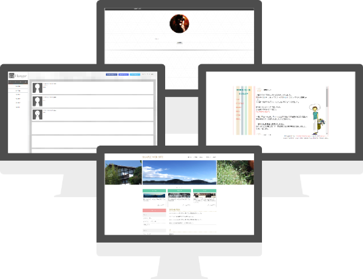

こんにちは
当サイトでは製作者の技術・経験・作品などを紹介しています。
- 2016 -
夢は岡山でWeb屋を起業 (抱負)
友人と30歳頃から岡山でWeb屋を営む事を決めました。 最初は少数から始める予定なのでそのためにもコーディングの技術が必要だと感じました。 夢を叶えるためにもまずは、Web屋さんに就職して自己の成長と会社の発展の仕方などを勉強していきたいと思っています。
- 2015 -
働きたいと思える仕事だと実感する
就きたい職が見つからずにいた所、友人からコーディングの自主勉強を勧められコーディング模写を実践しました。 その中で手応えを感じ、人生をマークアップに費やしたいと感じました。
- 2013 -
初コーディング
システム開発演習という、グループ制作の科目で初めてコーディングを経験。 完成品は荒削りなものになりましたが、コーディングをする事の楽しさを体験しました。
コーディング模写2号
- 制作経緯：jQueryがあるサイトを模写するため
- 苦労した所：jQueryの実装
- 感想：前回の模写よりもコーディング速度が早くなっている事を体感しました。しかしjQueryの実装に手こずってしまったので、jQuery習得が今後の課題となりました。
- 日付：2014年 11月